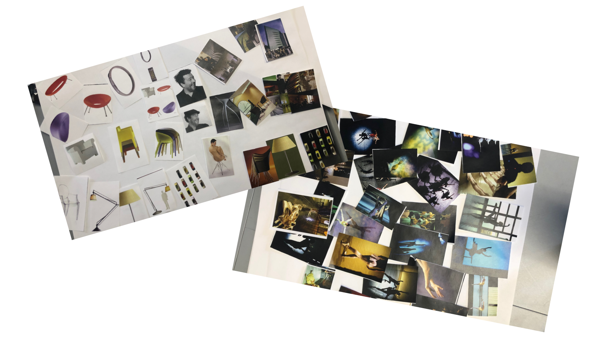
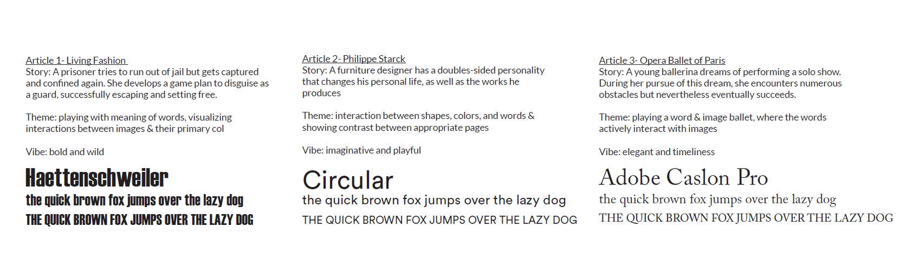
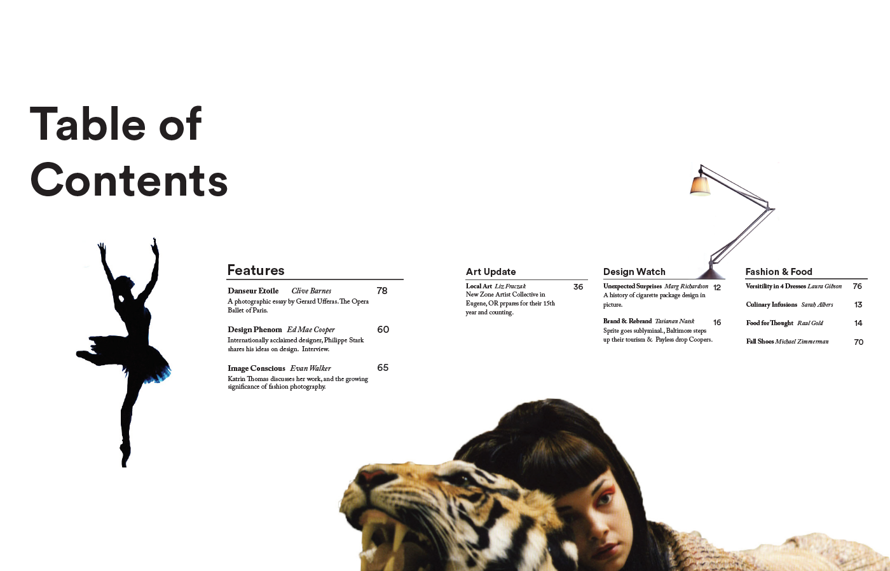
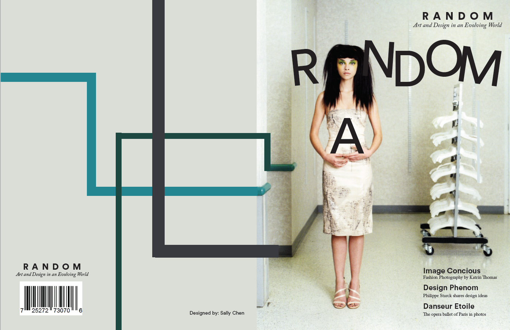

Random Magazine
Magazine & Layout Design


Background
Layout had never been my forte.
I was often unsure of where to put things to make them look "balanced", and did not go bold enough in my
designs.
As part of my graphic design studies at the Rhode Island School of Design, I decided to explore the world of
Magazine Design to improve my layout design skills, as well as abilities to work effectively with texts and
images.
This is my layout design for a magazine dedicated to
art and design. The material includes a number of original photos and text depicting three different
aspects of current cultural life: fashion photogra-
phy, dance and design.
The magazine includes three articles:
The first article will cover the work of French
photographer Gérard Uféras. The material will
include a number of original color photographs
portraying the training, performances and
backstage activity of the
dancers from the Opera Ballet of Paris.
The second article is about German fashion
photographer Katrin Thomas, who has worked
for a wide range of international magazines. The third article portrays the work of multi-disciplinary
designer Philippe Starck.
Goal
Redesign the three feature articles, cover page, and table of contents of the art magazine "Random",
choosing ~60 images out of the 200 given images and using all required texts given. Each article should have
a consistent theme.To achieve this goal, I divided my design process into six steps-follow along below!
1. Storyboarding
200 images are sure a lot to organize at once! Along with 10+ pages of texts, it was extremely overhwelming
at first.
I decided to tackle them step by step- first, I trimmed all pictures into small sizes and grouped them
together in as many different ways as possible- by colors, any noticeable patterns, contents, etc.
Next, I created my own story for each different group, without any consideration of texts.
This really helped me to gather a few storyboards for my 3 articles.

2. Ideation
Based on my initial groupings, I finalized one single story for each article. I also decided a general
theme- something that's consistent across every page, and a vibe- a feeling that the readers will get & the
desinger will try to achieve, for each article. In addition, I set the initial header fonts based on my
story & themes.

3. Layout & Iterate
Now that I have a visual guideline for each article, I started the initial layout process - deciding what
images goes on which page, where their rough position will be, and what keywords
I can extract from my story to use as headlines. Next up- finetune and repeat! I went through 5-8 rounds of
iterations for each article.
4.Cover & Contents
The cover & table of contents pages serve as the readers' first glance into the magazine. With the goal
of
portraying the feature articles to their fullest intent while highlighting the title, I decided to inject
one element from each article into the contents page,
while playing with the word "random" for the cover page.


Reflection
The storyboarding step was definitely the most challenging for me. I faced too many choices regarding which
image goes with which, which image to eliminate...the list goes on. However, what really helped me through
this process was actually being decisive.Solve each aspect of a problem with a clear
design process. Through this project, I was able to understand the process of designing from
inside to outside, or, more specifically, from content to form. Moreover, I discovered the ways in which the
designer acts as an editor, becoming involved in the process of editing the magazine, and thereby enriching
the design. The designer must be concerned not only with aesthetic issues, but also develop
a deep understanding of the subject of each
article.